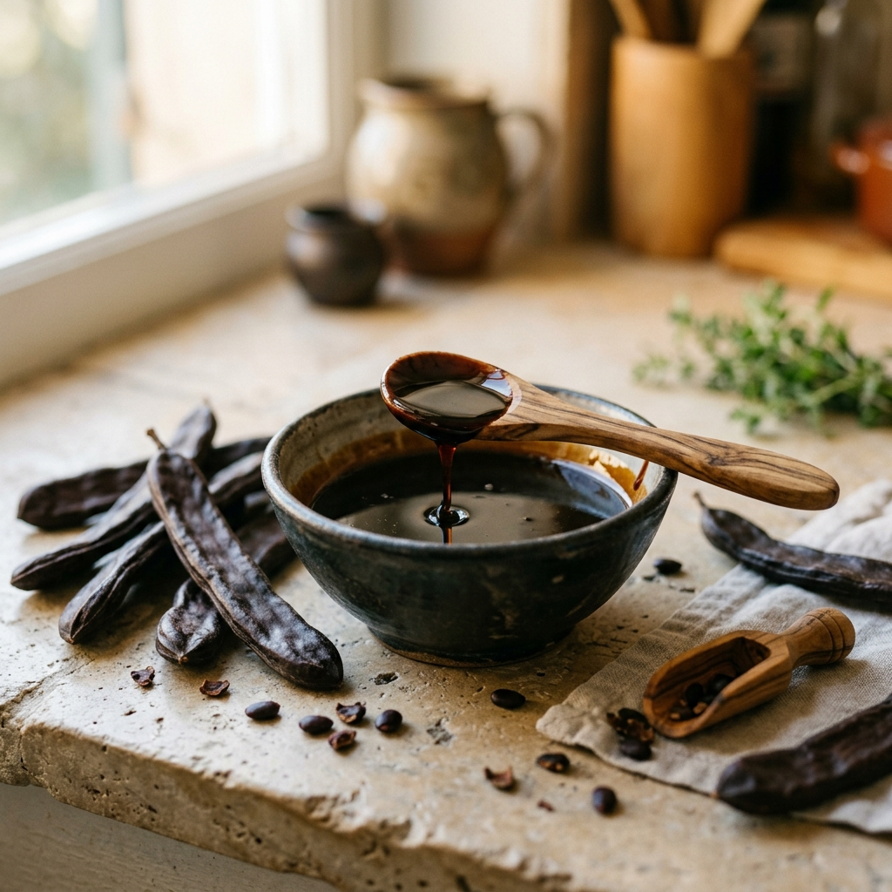

Johannisbrot-Melasse (Keçiboynuzu Özü): Das antike Superfood
Warum der wild wachsende Johannisbrotbaum des Taurusgebirges seit Jahrtausenden als natürlicher Kraftspender für Lunge, Knochen und Blutbildung geschätzt wird.

Schon in der Bibel ernährte sich Johannes der Täufer in der Wüste von den nährstoffreichen Schoten des Karobenbaums. In Anatolien wird die Melasse dieses ehrwürdigen Baumes liebevoll als "Keçiboynuzu" (Ziegenhorn) bezeichnet – ein Symbol für unbändige Widerstandskraft und Lebensenergie.
In einer Zeit, in der raffinierter Industriezucker unsere Gesundheit belastet, erlebt die traditionelle Anadoa Johannisbrot-Melasse (Keçiboynuzu Özü) eine verdiente Renaissance. Doch was macht diesen dunklen, samtigen Extrakt aus den sonnenverwöhnten Hängen des Mittelmeers so einzigartig?
Der Johannisbrotbaum: Überlebenskünstler des Mittelmeers
Der Johannisbrotbaum (Ceratonia siliqua) ist ein bis zu 500 Jahre alter, immergrüner Baum, der auf den kargen, kalkhaltigen Berghängen Anatoliens gedeiht. Er trotzt extremer Hitze und Dürre und benötigt weder chemische Düngemittel noch Pestizide. Seine lederartigen, dunkelbraunen Schoten reifen monatelang in der intensiven Mittelmeersonne heran und saugen die reine Kraft der Erde auf.
Historisch interessant: Die Samen des Johannisbrotes haben ein so bemerkenswert einheitliches Gewicht von ca. 0,2 Gramm, dass sie in der Antike als Gewichtsmaßeinheit für Diamanten und Gold dienten – daraus entstand das heutige Wort Karat (vom griechischen keration für Johannisbrot).
Das Nährstoffprofil: Ein natürliches Multimineral
Warum Johannisbrot-Melasse so kraftvoll ist:
- 3-facher Kalziumgehalt von Milch: Essentiell für stabile Knochendichte, gesunde Zähne und Muskelfunktion – ideal für heranwachsende Kinder und Senioren.
- Hervorragende Eisenquelle: Unterstützt die Bildung roter Blutkörperchen und hilft bei Erschöpfung, Müdigkeit und Anämie.
- Reich an Gallussäure & Tanninen: Wirkt als starkes natürliches Antioxidans gegen zellulären oxidativen Stress und Entzündungen.
- Frei von Koffein & Theobromin: Anders als Kakao belastet Johannisbrot weder das Nervensystem noch den Blutdruck.
Traditionelle Anwendung: Wohltat für Bronchien & Lunge
In der anatolischen Volksmedizin wird Johannisbrot-Melasse seit Jahrhunderten als Nummer-1-Hausmittel in den kälteren Monaten gereicht. Die enthaltenen Schleimstoffe und Polyphenole legen sich wie ein schützender Balsam über die gereizten Schleimhäute der Atemwege.
Insbesondere bei trockenem Reizhusten, Heiserkeit, Kurzatmigkeit oder zur Unterstützung von Rauchern wird empfohlen, morgens und abends je einen Esslöffel reine Johannisbrot-Melasse langsam im Mund zergehen zu lassen. Die schleimlösenden und entkrampfenden Eigenschaften erleichtern das freie Durchatmen spürbar.
Das Geheimnis der Kaltgewinnung (Keçiboynuzu Özü)
Herkömmliche Melassen werden oft stundenlang in offenen Kesseln über offenem Feuer bei über 100°C gekocht. Dieser Prozess karamellisiert zwar den Zucker, zerstört jedoch hitzeempfindliche Vitamine, Enzyme und kann schädliches HMF (Hydroxymethylfurfural) bilden.
Bei Anadoa Johannisbrot-Melasse setzen wir auf modernste Kalt-Vakuum-Extraktion bei schonenden Temperaturen unter 40°C. Dadurch bleibt die Melasse roh, bioaktiv und behält ihren fruchtig-malzigen, an Edelschokolade erinnernden Geschmack in vollkommener Reinheit.
Anwendungstipps für den Alltag
- Der pure Morgen-Löffel: 1 Esslöffel pur auf nüchternen Magen für einen sofortigen, langanhaltenden Energieschub ohne Blutzucker-Crash.
- Power-Drink für den Winter: 1 EL Johannisbrot-Melasse mit 200 ml warmem Haferdrink und einer Prise Zimt verrühren – ein himmlischer Kakao-Ersatz.
- Traditioneller Tahin-Pekmez Mix: Zu gleichen Teilen mit Anadoa Tahin (Sesammus) verrühren – das anatolische Frühstückselixier schlechthin!
- Backen ohne Zucker: Ersetzen Sie in Rührkuchen und Desserts den Kristallzucker durch Johannisbrot-Melasse (z.B. in unserem Johannisbrot-Pudding Rezept).
Fazit: Naturkraft in jedem Tropfen
Johannisbrot-Melasse ist die perfekte Symbiose aus antikem Naturwissen und modernen ernährungsphysiologischen Ansprüchen. Wer Vitalität, starke Abwehrkräfte und gesunde Knochen auf rein pflanzliche Weise fördern möchte, findet in diesem sonnengereiften Extrakt einen treuen Begleiter.